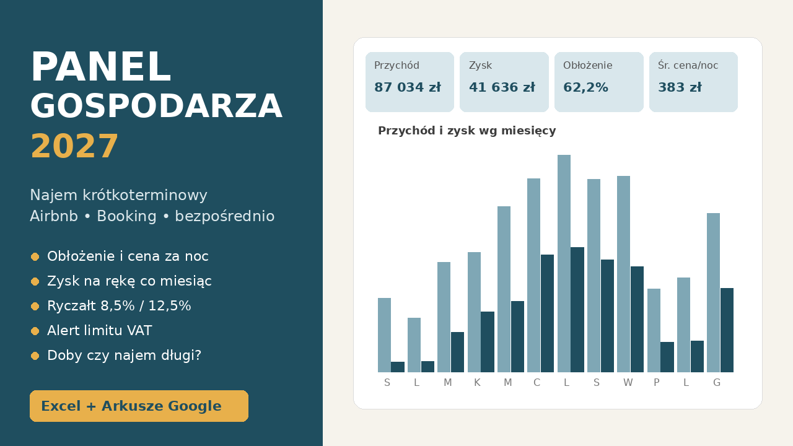

Twoje dane
Stawki: ryczałt od najmu 8,5% do progu i 12,5% od nadwyżki; limit zwolnienia z VAT 240 000 zł (stan na listopad 2026). Kalkulator jest poglądowy i nie jest poradą podatkową.
Wynik na rok
| Sprzedane noce | – |
| Liczba pobytów | – |
| Przychód od gości | – |
| Prowizje platform | – |
| Sprzątanie i pranie | – |
| Koszty stałe | – |
| Ryczałt | – |
| Zysk na rękę | – |
Chcesz liczyć na prawdziwych rezerwacjach, miesiąc po miesiącu?
Panel Gospodarza 2027 to arkusz Excel / Arkusze Google, do którego wpisujesz rezerwacje i koszty, a on liczy resztę:
- obłożenie, ADR i RevPAR w każdym miesiącu
- ryczałt za każdy miesiąc z terminem wpłaty
- alert limitu VAT i opłata miejscowa
- przykładowy rok apartamentu + instrukcja PDF

Najczęstsze pytania
Jaki podatek płaci się od najmu krótkoterminowego?
Najem prywatny rozlicza się ryczałtem od przychodów ewidencjonowanych: 8,5% do 100 000 zł przychodu w roku i 12,5% od nadwyżki. Najem w działalności (usługi zakwaterowania) może być rozliczany inaczej, a kwalifikacja bywa sporna – warto potwierdzić ją z księgową.
Czy prowizja Airbnb i Booking zmniejsza podatek?
Różnie się to interpretuje. Dlatego w kalkulatorze możesz wybrać, czy liczyć podatek od pełnej kwoty od gościa (wariant ostrożny), czy od kwoty po prowizji.
Jaki jest limit zwolnienia z VAT?
Od 1 stycznia 2026 r. limit zwolnienia podmiotowego z VAT wynosi 240 000 zł sprzedaży rocznie (wcześniej 200 000 zł). Po jego przekroczeniu usługi zakwaterowania opodatkowuje się stawką 8%.
Co z rejestrem najmu krótkoterminowego?
Unijne rozporządzenie o najmie krótkoterminowym stosuje się od 20 maja 2026 r. Polska ustawa wprowadzająca Centralny Wykaz Turystycznych Obiektów Noclegowych i numery rejestracyjne była w listopadzie 2026 r. w trakcie prac parlamentarnych.
Doby czy najem długoterminowy – co się bardziej opłaca?
Najem na doby zwykle daje więcej przychodu, ale też więcej kosztów i pracy. Najlepszą miarą jest zysk na godzinę Twojej pracy – kalkulator pokazuje go dla obu wariantów.